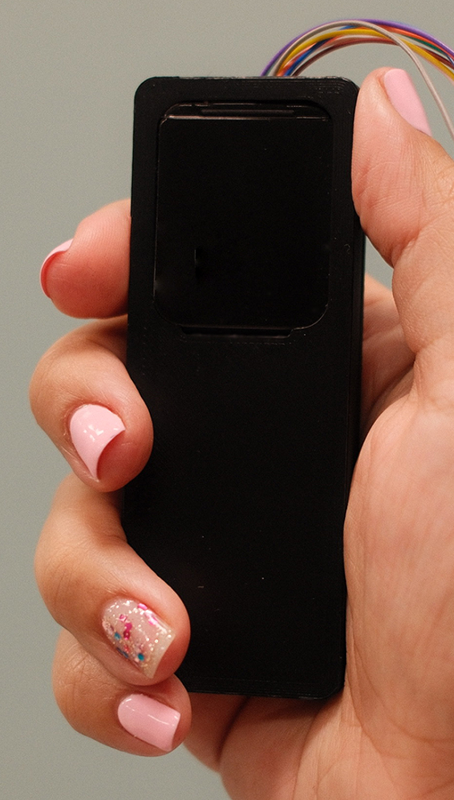
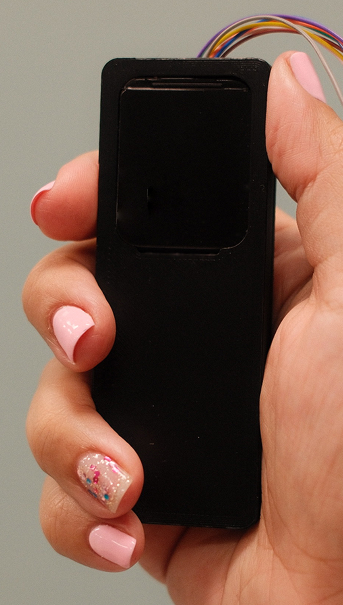
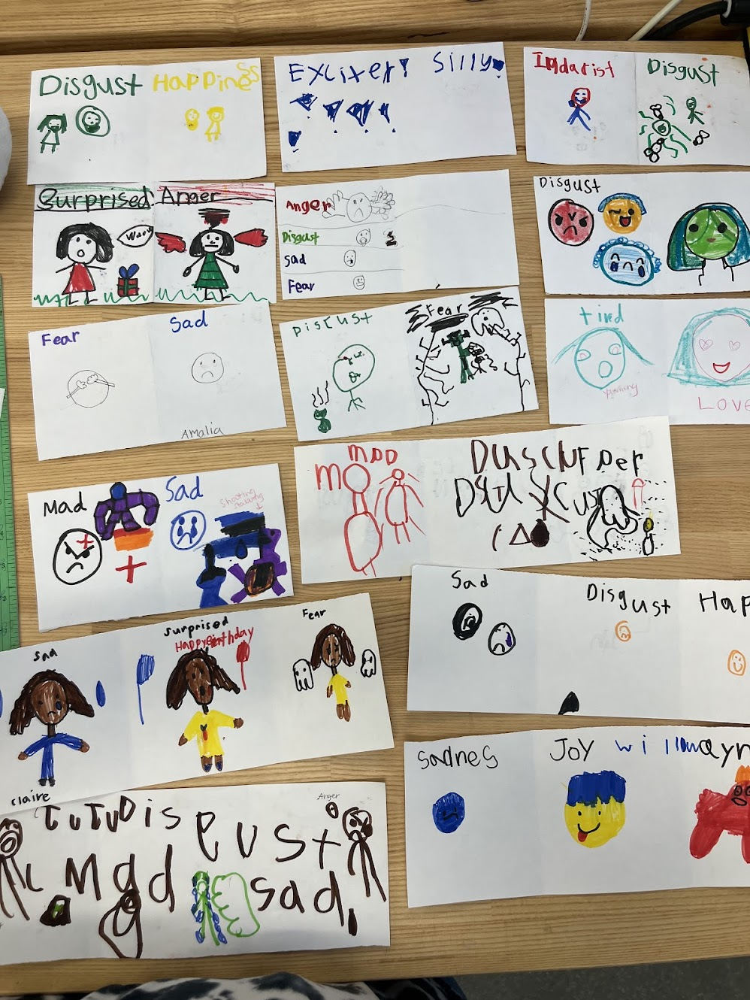
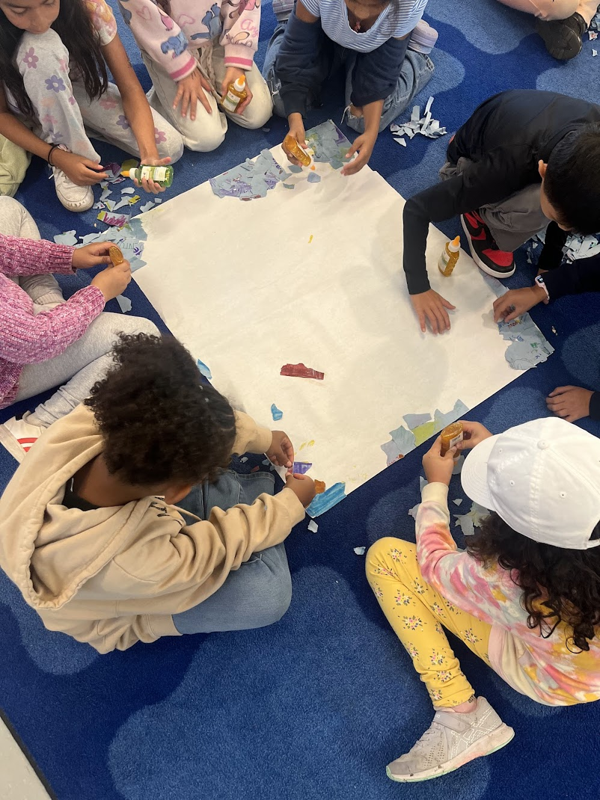
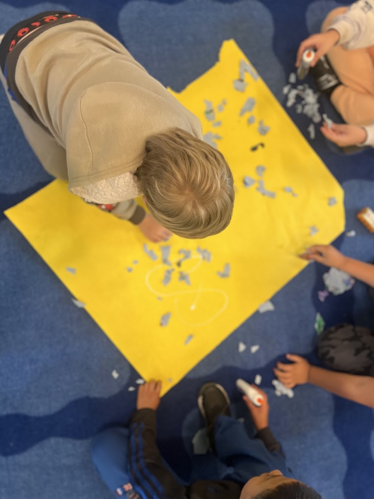
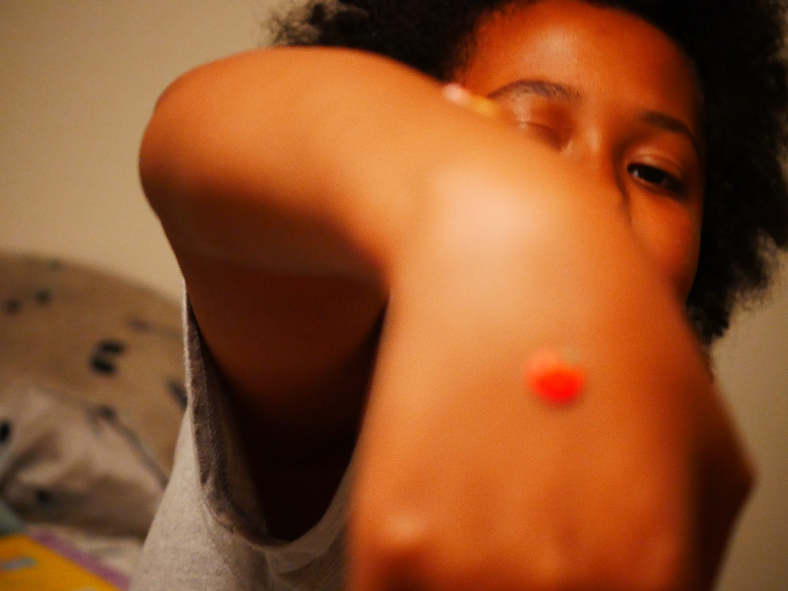
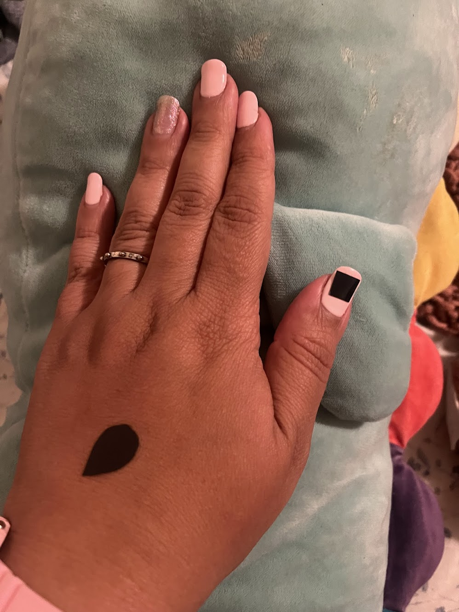
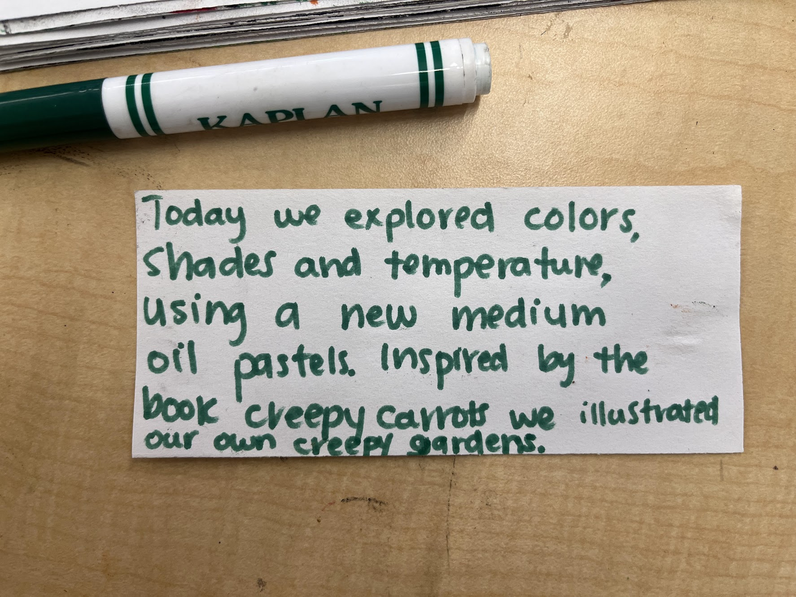

Shifting from classroom edtech to student health and caregiver transparency.
4.
Show Me your colors
Graduate Thesis Project
Show Me Your Colors is an HRV-based wearable system designed for classroom settings. As a researcher-educator, I observed the challenges edtech creates in learning environments. Instead of adding to classroom complexity, I focused on student health—using heart rate variability monitoring connected to a parent remote, allowing caregivers to see how their child's physiological state responded throughout the school day.
Project overview
As a researcher-educator working in K-12 classrooms, I witnessed firsthand how educational technology often creates more challenges than solutions—adding cognitive load, surveillance pressure, and fragmentation to already complex learning environments. Rather than contributing to this problem, I redirected my thesis toward student health.
Show Me Your Colors uses HRV monitoring to track students' physiological responses during the school day. The system connects to a parent remote, allowing caregivers to understand how their child is faring in class—not through grades or behavior reports, but through direct insight into their well-being.
.png) 

Visual feedback states
Early interface explorations used familiar metaphors like ice cream to represent physiological states—full (regulated), melting (transitioning), and melted (dysregulated)—making health data accessible to both children and parents.
Co-creation with students
Through participatory design sessions, students explored how to represent physiological states through color and visual metaphors. They created visual vocabularies, tested wearable prototypes, and provided feedback on what made health data feel accessible rather than clinical or stigmatizing.



HRV indicators and prototypes



Impact
This project demonstrates a critical shift from edtech solutions to health-centered design. By prioritizing student well-being and giving parents transparent access to their child's physiological state, the system creates accountability and care infrastructure—rather than adding another layer of classroom technology that teachers and students must navigate.